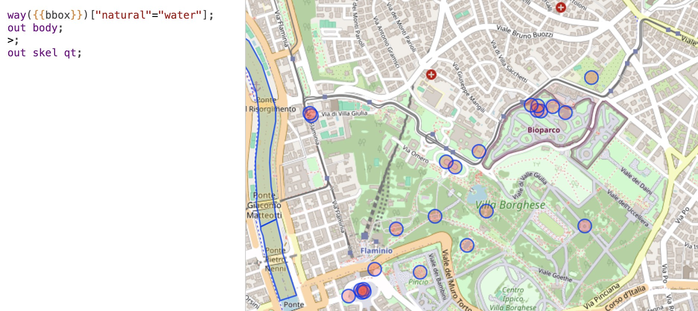
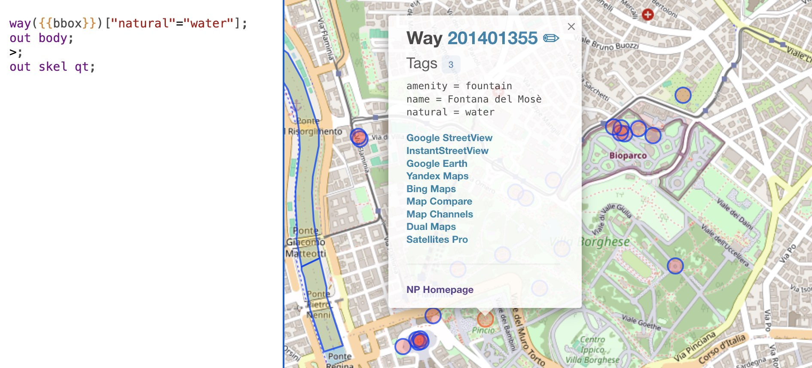

We glad you're interested in our expansion. We hope you find it useful.
In the version for Firefox, you need to give permission to the extension to interact with the site https://overpass-turbo.eu/.
To do this, click on the “Give permission” button and in the window that appears, click the “Allow” button.
We glad you're interested in our expansion. We hope you find it useful.
At first, you need to write a request and execute it.
When working without an extension, you get the name of the place, probably its address and, in some cases, coordinates.
When you install our extension, you receive active links to popular mapping services leading to the coordinates of the selected object. It is important to note that the links open in a new window.
Good luck with GEOINT.